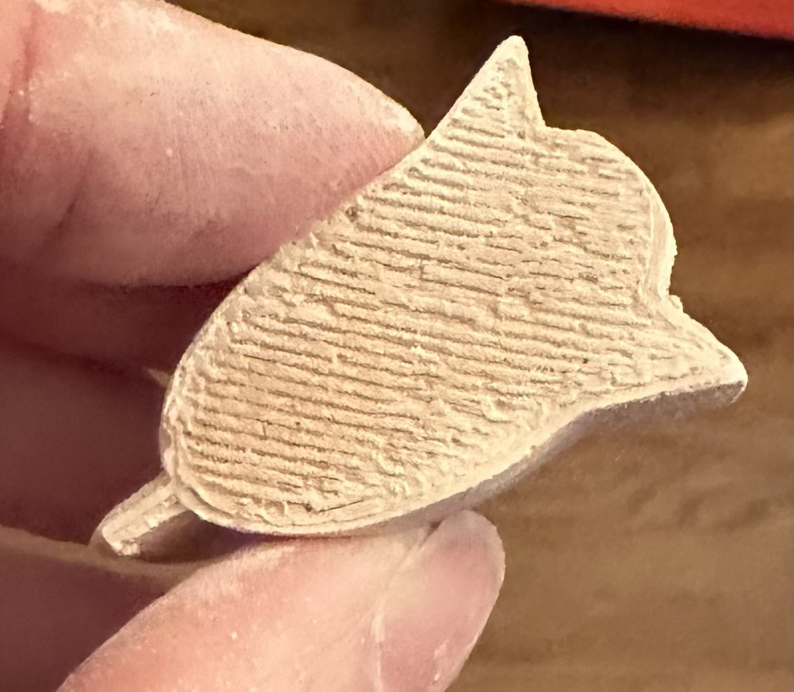
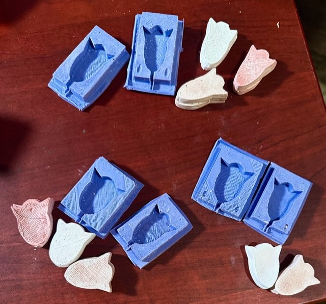

Assignment 6: Molding and Casting Part 2
When we left off at Part 1, I had realized my 3D printed mold was inverted from how it was supposed to be, so I set out to make a new mold, the correct way for the project.
I decided to make a sort of 3D-but-flat cat/tulip shape (it came out as more of a tulip in Cura, but looks like a cat in Rhino), and I wanted to make keys for easier casting.
There was method to my madness in printing this kind of shape, and it is related to my final project (I was getting practice).
So far, all seemed well.
Once I had finalized the measurements I wanted for my mold in Rhino, I made STL files, and went to work in CURA for printing. Again, in Cura, I seemed to have no problem getting my measurements in, everything looked good.
Again, so far, so good.
Then I sent the mold to print ( a 1.5-hour print job), and I found that, while the mold printed, the printer destroyed the keys. I thought that perhaps they and/or the mold were too small, so I went back to Rhino to adjust.
This is why there are numerous source files below - I had to make several changes in Rhino, and still the 3D printers (I have 2 working now that I got more new nozzles) would not print the keys.
I was running short on time to finish the assignment, so I decided to go ahead and cast with the numerous molds I had printed instead, and to find ways to hold them together externally.


It was time to get out the OOMOO and cast the molds. I set up some molding trays to contain overflow, and set up a station for mixing the OOMOO. Then I cast the molds.

I let the OOMOO cure for 10 hours, overnight. In the morning, I took apart the molding trays and peeled my molds from the 3D printed originals.
I needed to trim some excess silicone from around the molds.
Now I had molds! I had 2 identical molds and 1 that turned out a bit different, so I decided to cast hydrostone plaster into all of them, in three (3) batches. I mixed a little pigment into each batch.
I used hair clips only to keep the molds together for the first batch, using a disposable pastry tube for injecting plaster through the pouring spout. I used a combination of toothpicks (like screws) and hairclips for the 2nd and 3rd rounds.
Round One:
Round Two:

Round Three:
Takings the hydrostone casts out was fun.
I enjoyed many plaster messes.
FINAL RESULTS
In my first two batches a few pieces came out a bit uneveen and had to be sanded down a little to look nicer. The third batch came out better than the first two.

Due to printing problems (which have led now to the need for another replacement extruder (sigh!), I have two very similar molds and one a bit more vertical. So instead of 4 identical pieces, I ended up with 3 identical from one of the similar molds,
2 identical pieces from the other similar mold (it is just a bit smaller), and 3 identical pieces from the more vertical mold. I was running out of time, so a fourth round of casting was not possible.
Here are my casts, along with their molds, and then with all of the pieces of this project together.

Finally, I was finished!
SOURCE FILES:
NewMold5.3dm
NewMold4.3dm
NewMold3.3dm
NewMold.3dm